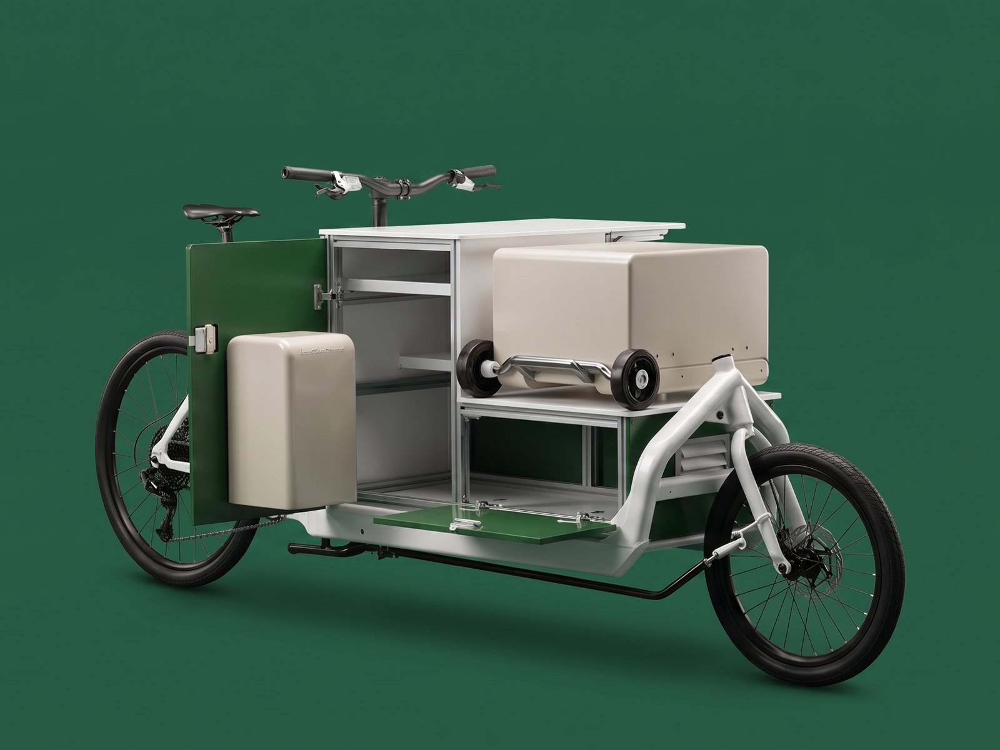
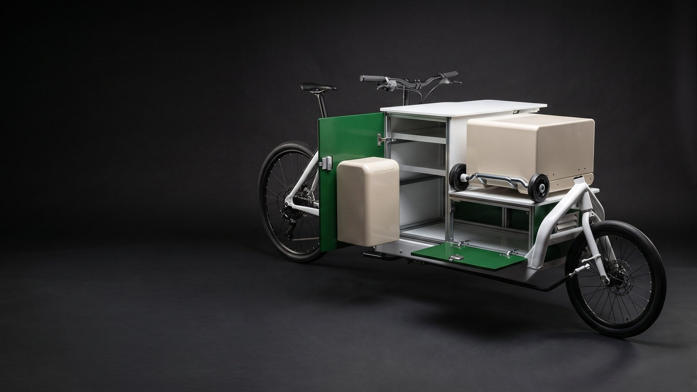
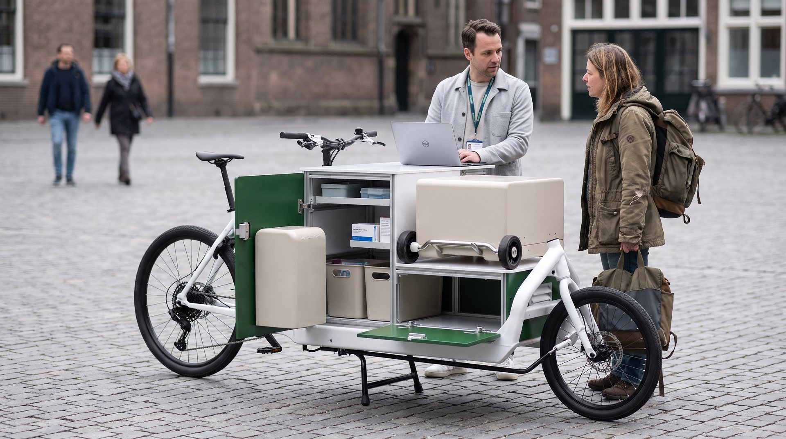
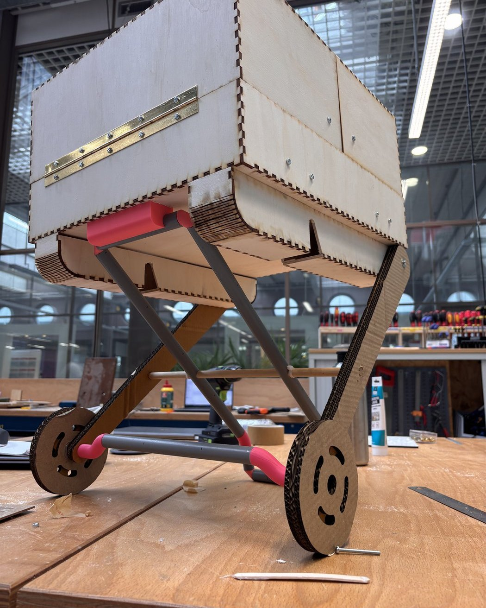
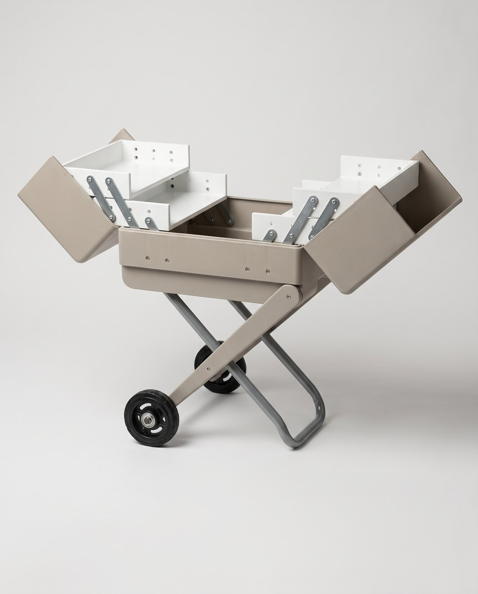

Care that people avoid
Many homeless people stay away from regular care, so the doctor has to come to them and earn their trust first.
A cargo bike that folds open into a small GP practice, bringing primary care to homeless people in the place where they already are.

People who live on the street often avoid regular healthcare. Small problems go untreated, and a simple wound can grow into a serious infection or even an amputation. A doctor’s bag carries too little to treat someone properly on location, and an ambulance is too big, too expensive and too intimidating.
For a general practitioner who works with homeless people, our team of six students designed a mobile practice built on an electric cargo bike. It brings planned GP care, not emergency care, to shelters and to spots like the space under a bridge, so a doctor can build trust and treat small problems before they become big ones.
The client was very enthusiastic about the result and can see it becoming part of the healthcare for homeless people.

Product designer in a team of six
We worked as one design team and made almost every decision together, from the research and the three concept directions to the final design.
My own focus was the medical unit on the bike. I worked out how it opens and how the parts move, and I tested those mechanics by building test models, ending with a 3D printed mockup of the complete bike and unit.
A practice has to fit on a bike, and still feel safe to walk up to.
Many homeless people stay away from regular care, so the doctor has to come to them and earn their trust first.
A doctor’s bag holds too little for treatment on location. An ambulance is too large, too costly and scares people off.
The unit had to look supportive and non-aggressive, so that walking up to it feels like a small step.
Wound care on the street needs a strict split between clean supplies and used material such as needles.
Care happens outside and indoors, so the equipment has to leave the vehicle and roll into a shelter.
Medication and a laptop travel along, covering 10 to 20 km a day, and must stay secure when the doctor steps away.
One bike that carries the practice, opens it up and lets it travel on without the bike.
Small enough for a bike path or a shelter entrance, with the range for a day in the city and a familiar look.
A side door swings out and a front panel folds down, turning the cargo box into a work station with a worktop on top.
Equipment travels in removable cases, so care can move into a shelter while the bike stays outside.
The large case rolls on its own wheels, stands up on folding legs and opens at working height.
Green and white panels with rounded cases keep the unit far from the look of an ambulance.
Laser cut and 3D printed models showed whether the hinges, panels and folding legs work before details were fixed.


